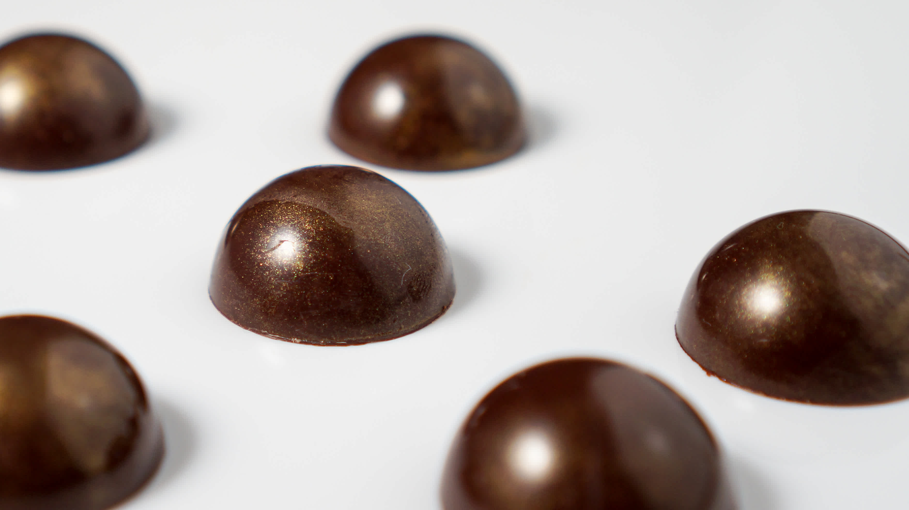

Old Fashioned Choctail

Description
This old time classic cocktail also packs excellent flavours for a chocolate bonbon. Perfect for the whiskey connoissieur and chocoholic alike!
Ingredients
- 310g sugar
- 90g Glucose Syrup
- 30g Sorbitol
- 300g Double Cream
- 80g Skimmed Milk
- 1g Sodium Bicarbonate
- 5g Vanilla
- 45g Butter
- 20g Cocoa butter
- 120g of your favourite Bourbon
Steps
- Mix cream, milk, vanilla, sodium and sorbitol and warm to approx. 80C.
- Meanwhile heat an empty saucepan and add sugar and glucose. Continue to heat until you get an amber-coloured caramel.
- Gradually add the warm cream mixture (step 1) and mix well.
- Add butter and heat to 118C
- Take the caramel off heat and add cocoa butter, mixiing well.
- Cool to below 75C, add Bourbon and mix well.